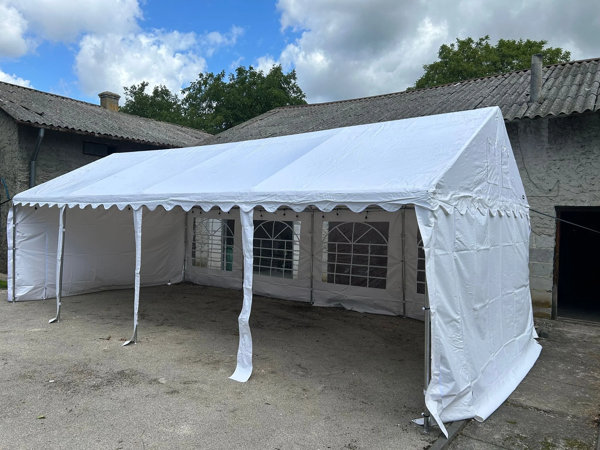

— wesele, komunia, chrzciny, stypa. Wszystkie święta rodziny pod jednym dachem. Nie pytamy przy którym. Nasz namiot broni się w każdej sytuacji.
Uroczystości rodzinne mają wspólny mianownik: 20-80 osób w jednym namiocie (większe w zestawie), ciasta od babci, rozmowy do rana, ktoś zawsze płacze. Namiot robi to co robi — daje dach i stoły. Reszta to rodzina.
Rodzinne uroczystości to szeroki wachlarz — od 30-osobowej komunii po 150-osobowe wesele. Dla każdej okazji dobieramy odpowiedni rozmiar, konfigurację i czas. Robimy wszystko — poza emocjami.
Dopasowujemy rozmiar do liczby osób. Stoły + krzesła w pakiecie "+ stoły", girlandy LED w cenie. Montaż dzień przed, demontaż następnego dnia. Uroczystości = bez stresu.
Kameralnie, w ogrodzie rodziców lub dziadków.
Dzieciaki + rodzina. Maj-czerwiec, rezerwacja 2-3 mc wcześniej.
Okrągła rocznica, zjazd 3 pokoleń. Z tortem, z przemówieniem.
Wesele w plenerze. Większe (80-140 os.) składamy zestawem. Rezerwacja 3-6 miesięcy wcześniej.
Maj 2025, komunia córki Marty P. 40 osób — rodzina + chrzestni. Ogród rodziców w miejscowości obok Jędrzejowa. Namiot 4×8 z montażem, stoły + krzesła. Postawiliśmy w piątek wieczorem, demontaż w niedzielę rano. "Pogoda nie zawiodła, ale dach pod namiotem to jednak inna sprawa niż słońce w twarz całą godzinę." Link: [opinia Marty P. — landing].
Tak, do 80 osób w namiocie 6×12m. Większe wesela (80-140 os.) składamy zestawem — 6×12 główny + ekspresy satelitarne. Na wesele rezerwacja minimum 3-4 miesiące wcześniej — w sezonie soboty latają.
Ciszej, szybciej, stonowanie. Zwykle zadzwonią 1-3 dni wcześniej — staramy się zawsze dotrzymać terminu. Bez girland, bez ozdób — prosty namiot, stoły, krzesła. Delikatne podejście.
Im wcześniej tym lepiej. W 2026 najlepsze soboty maj-wrzesień mamy już połowę zajętą, zamawiane rok temu. Dzwoń od razu jak masz datę.
Nie. Jedzenie twoje — korkowe to patologia. Przynosisz co chcesz, babcia piecze co chce. My stawiamy dach.
— dla wesel i komunii rezerwuj wcześnie. dla stypy — dzwoń, pomożemy w 48h.
